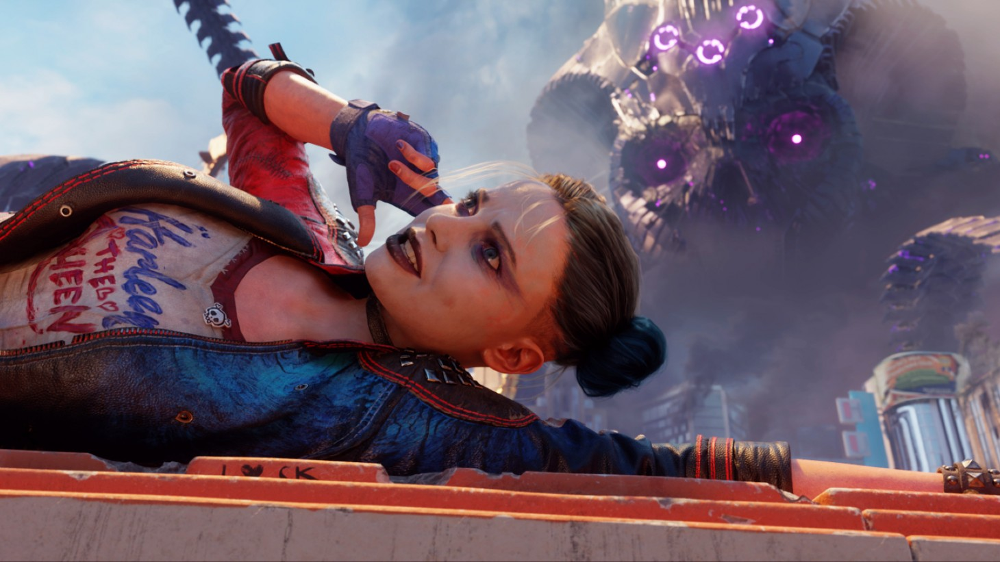
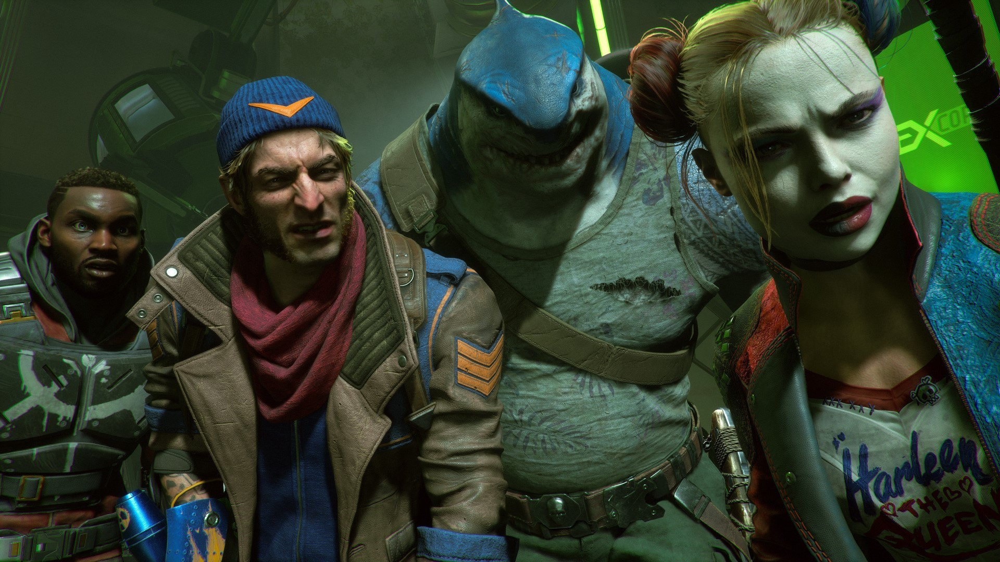
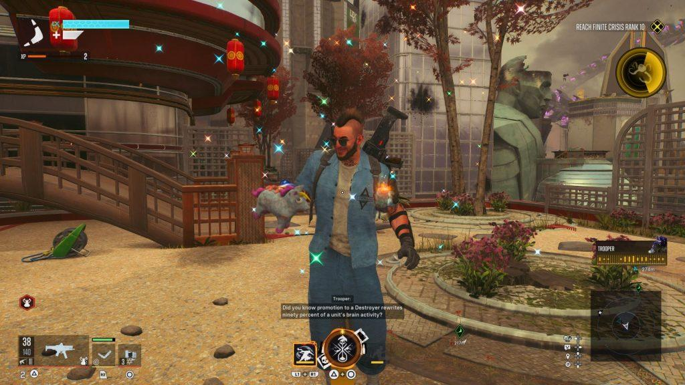
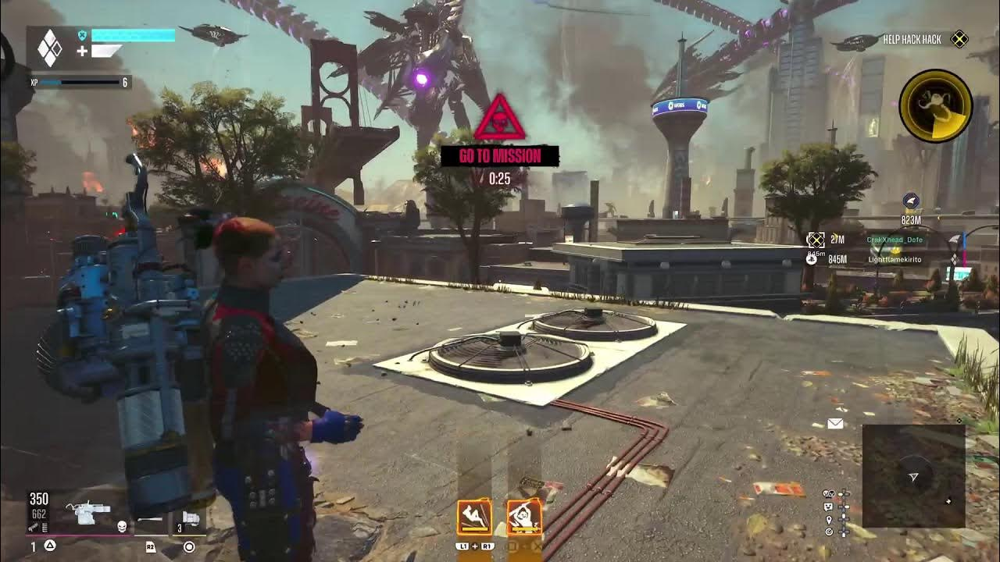
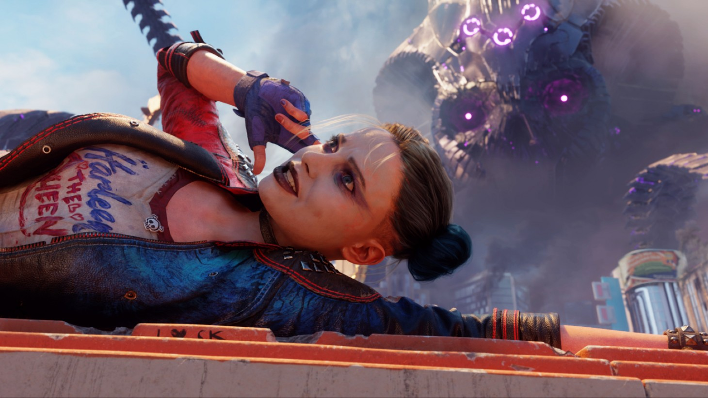
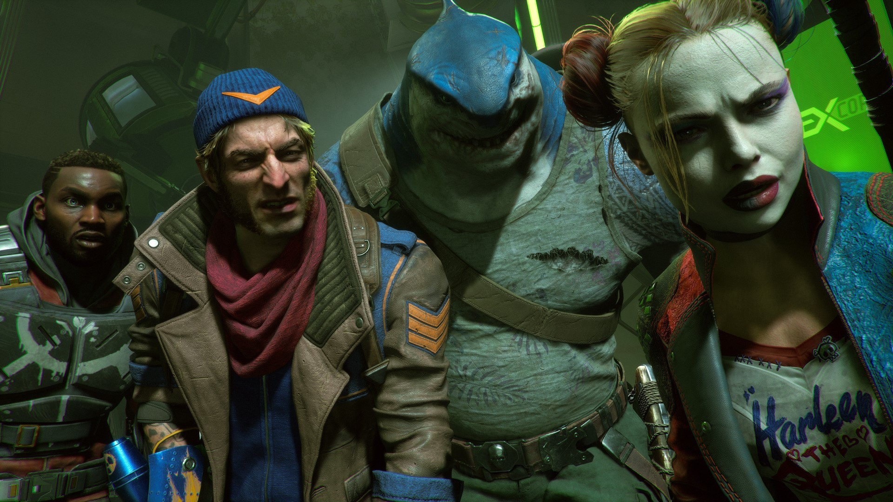
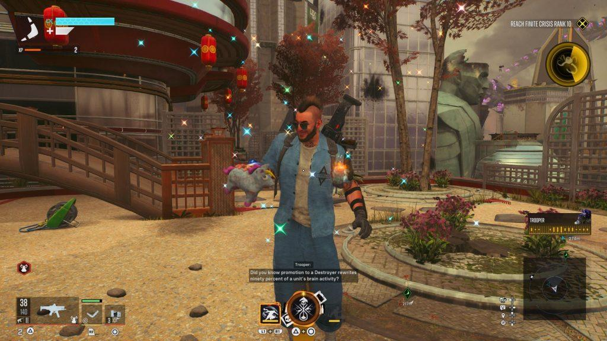
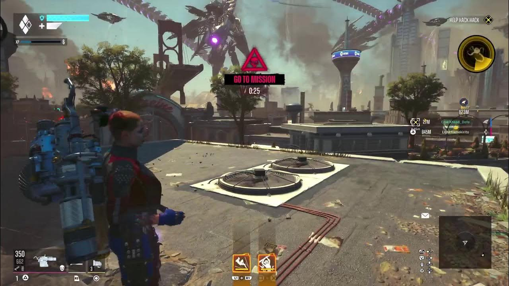

Suicide Squad: Kill The Justice League
Información del juego
Suicide Squad: Kill the Justice League es un videojuego desarrollado por Rocksteady Studios,
y distribuido por Warner Bros. Interactive Entertainment, para las plataformas PlayStation 5,
Xbox Series X|S y Microsoft Windows, basado en el equipo de los cómics de DC Comics, Suicide Squad.
Se estrenó en el 2024.
Suicide Squad: Kill the Justice League es un juego de acción y aventuras ambientado en un mundo abierto con sede en Metrópolis. El juego presenta
cuatro personajes jugables: Capitán Boomerang, Deadshot, Harley Quinn y King Shark. Si bien se puede jugar en solitario, el juego
también cuenta con un modo multijugador cooperativo para cuatro jugadores. Cuando se juega en solitario, los jugadores pueden cambiar
de personaje a voluntad, mientras que los demás personajes son controlados por la IA.
De Rocksteady Studios, los creadores de la saga de Batman: Arkham, llega Suicide Squad: Kill the Justice League, un innovador shooter de acción en tercera persona en el
que la panda de inadaptados definitiva tiene que hacer lo imposible: matar a la Liga de la Justicia.
Juega en la piel del Escuadrón Suicida (Harley Quinn, Deadshot, Capitán Boomerang y el Rey Tiburón) y
participa en una misión imposible en la que tienen que aniquilar a la Liga de la Justicia.
Déjate caer en el dinámico y expansivo mundo abierto de una Metrópolis destrozada por la invasión de
Brainiac y amenazada por los héroes que una vez la protegieron.
Disfruta de una jugabilidad que aporta una fusión única de habilidades de viaje mejoradas, uso de armas y combate
cuerpo a cuerpo en combinación con exploración libre y escenarios verticales para luchar contra el enemigo.
Reseñas
IGN
Mediocre
"Suicide Squad: Kill the Justice League es un shooter de saqueo repetitivo y soso que,
a pesar de una historia interesante, nunca resulta divertido el tiempo suficiente."
"Suicide Squad: Kill the Justice League es un juego completamente frustrante. Hay cosas para disfrutar
aquí, con combates lo suficientemente ágiles como para transmitir una historia de cómics de DC realmente buena,
ingeniosamente vestida con altos valores de producción. Pero todo lo demás simplemente se derrumba a su alrededor.
El diseño atractivo de la misión es casi inexistente, la mecánica de saqueo y disparos es cansada y aburrida, y
el postjuego grotescamente repetitivo deja poco o nada que hacer de interés. El resultado es un desastre que nunca
impresiona con ninguna de sus numerosas ideas mal concebidas."
"5 / 10"
Metacritic
Críticas mixtas
"Basado en 90 reviews de críticas."
"Suicide Squad: Kill the Justice League tiene una historia apasionante y un
departamento técnico bien elaborado. Sin embargo, todo se desmorona debido a un ciclo de
juego repetitivo y poco creativo que no augura nada bueno para su futuro como juego de servicio en vivo."
"60 / 100"
LevelUp
Un escuadrón con una misión épicamente repetitiva
"Suicide Squad: Kill the Justice League posee buenas ideas y por momentos se observa el talento de Rocksteady que nos
cautivó en sus juegos anteriores. Cuando se enfoca en la travesía de Harley Quinn, Deadshot, King Shark y Captain Boomerang,
se vuelve una experiencia sumamente disfrutable. El combate también es interesante y tiene una base sólida, a pesar de sus
problemas. Por desgracia, muchas decisiones de diseño juegan en su contra y lo alejan de la grandeza."
"6.5 / 10"
Imágenes y capturas del juego
 






